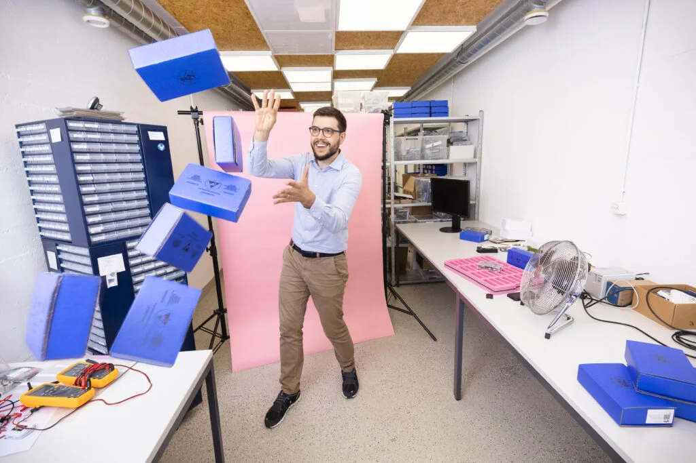

BILANZ, Switzerland’s top business magazine presents Felix Adamczyk and
qiio on a 2-page spread: In addition to an interview with our CEO Felix, two Venture Capitalists (Mountain
Partners and Swisscom Ventures) discuss qiio’s potential, and Professor Dietmar Grichnik of the Hochschule
St. Gallen (one of Europe’s top business universities) compares factors relevant to qiio’s success as a
start-up with the industry average.
BILANZ, das Top-Wirtschaftsmagazin der Schweiz, präsentiert Felix Adamczyk und qiio auf einer 2-seitigen
Ausgabe: Neben einem Interview mit unserem CEO Felix diskutieren zwei Risiko Kapitalisten (Mountain Partners
und Swisscom Ventures) über das Potenzial von qiio, und Professor Dietmar Grichnik von der Hochschule St.
Gallen (eine der besten Wirtschaftsuniversitäten Europas) vergleicht Faktoren, die für den Erfolg von qiio
als Start-up relevant sind, mit dem Branchendurchschnitt.
Thank you BILANZ.
Read full article here (German):
https://lnkd.in/gdjnQiXp